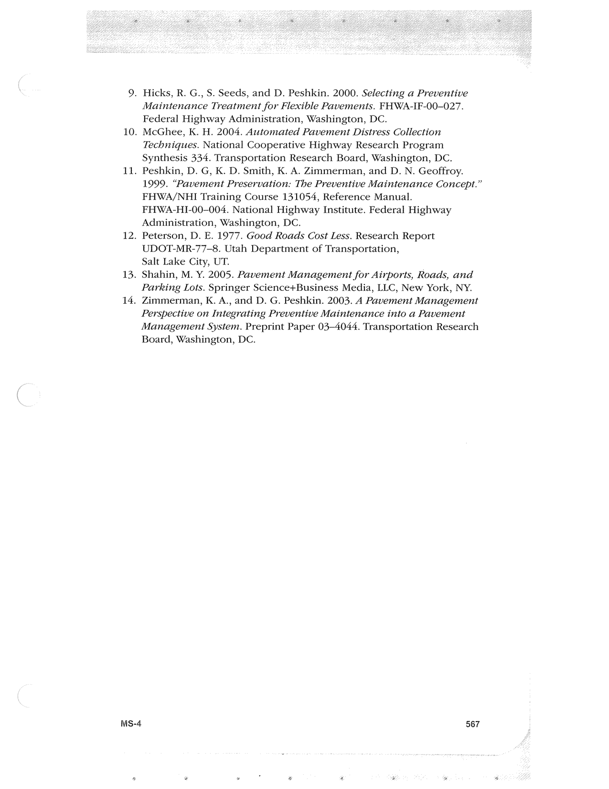

PDF page 601 · book page sequence 567


Searchable transcription
Unproofread OCR · 154 detected words; mean OCR confidence 93.12. Check technical values, symbols and table columns against the scan.
10.
11.
12.
13.
14.
. Hicks, R. G., S. Seeds, and D. Peshkin. 2000. Selecting a Preventive
Maintenance Treatment for Flexible Pavements. FHWA-IF-00-027. Federal Highway Administration, Washington, DC.
McGhee, K. H. 2004. Automated Pavement Distress Collection Techniques. National Cooperative Highway Research Program Synthesis 334. Transportation Research Board, Washington, DC. Peshkin, D. G, K. D. Smith, K. A. Zimmerman, and D. N. Geoffroy. 1999. “Pavement Preservation: The Preventive Maintenance Concept.” FHWA/NHI Training Course 131054, Reference Manual. FHWA-HI-00-004. National Highway Institute. Federal Highway Administration, Washington, DC.
Peterson, D. E. 1977. Good Roads Cost Less. Research Report UDOT-MR-77-8. Utah Department of Transportation,
Salt Lake City, UT.
Shahin, M. Y. 2005. Pavement Management for Airports, Roads, and Parking Lots. Springer Science+Business Media, LLC, New York, NY. Zimmerman, K. A., and D. G. Peshkin. 2003. .A Pavement Management Perspective on Integrating Preventive Maintenance into a Pavement Management System. Preprint Paper 03-4044. Transportation Research Board, Washington, DC.
MS-4 567